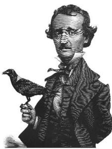

(The Pit and the Pendulum)
Impia tortorum longas hic turba furores
Sanguinis innocui, non satiata, aluit.
Sospite nunc patria, fracto nunc funeris antro.
Mors ubi dira fuit vita salusque patent.
(Bu dörtlük, Paris'te, eskiden Jacobin'ler Kulübü'nün bulunduğu yere yapılacak olan bir çarşının kapıları için yazılmıştır.)
Bitkindim –ölecek gibiydim, uzun işkence beni bitirmişti; bağlarımı çözüp oturmama izin verdikleri zaman duyularımın benden ayrılıp gitmekte olduğunu hissettim. Yargı –o korkunç ölüm yargısı– kulaklarıma parçalanmadan gelen son kelimelerdi. Ondan sonra engizisyoncuların sesleri tek kelimesi bile anlaşılamayan düşsel bir uğultu içinde erimeye başladı. Bu uğultu ruhuma dönme düşüncesini getirdi –belki de bir değirmen dolabının çıkardığı sesi andırdığı için böyle bir düşünceye kapılıyordum. Biraz sonra o da kesildi, hiçbir şey işitmez oldum. Gerçi bir zaman daha gördüm –ama nasıl her şeyi büyüterek! Kara binişli yargıçların dudaklarını gördüm. Gözüme bembeyaz göründüler –üstüne şu satırları karaladığım kâğıttan bile daha beyaz– üstelik gülünç derecede inceydiler; bu incelik kendilerine olan güvenlerinin aşırılığından –sarsılmaz kararlarından– işkence çeken insanları acımasızca aşağılamalarından gelen bir incelikti. Yazgımı belirleyen sözlerin o dudaklardan dökülmekte olduğunu gördüm. Ölüm tümceleri okuyarak kıvrıldıklarını gördüm. Adımın hecelerine uyduklarını gördüm; arkasından bir ses gelmeyince titredim, irkildim. Bir ara, salonun duvarlarını kaplayan kara kumaşların yumuşak, belli belirsiz dalgalanışını da gördüm, birkaç an süren çılgınca bir korkuya kapıldım. Sonra bakışlarım masanın üstündeki yedi büyük şamdana takıldı. Önce görünüşlerinde bir acıma vardı, beni kurtarmaya gelmiş, beyaz, incecik melekler gibiydiler; ama sonra, birdenbire, ruhumu öldürücü bir bulantı kapladı, bütün vücudum sanki bir galvani bataryasının teline dokunmuşum gibi titremeye başladı; bu arada az önceki melekler alev başlı, anlamsız hayaller haline gelmişlerdi, onların bana yardım edeceği yoktu. Sonra aklıma ahenkli bir nota gibi yepyeni bir düşünce geldi; mezarda bizleri ne kadar tatlı bir rahatlığın beklemekte olduğunu düşündüm. Bu düşünce gelişini hiç belli etmeden, sessizce süzülmüştü kafamın içine, tadına bütün bütün varabilmem biraz uzun sürdü; sonunda ruhum tam onu gereğiyle hissetmeye, tadını çıkarmaya başladığı sırada, önümdeki yargıçların yarı yarıya gördüğüm biçimleri, sanki sihirlenmiş gibi büsbütün yok oldular; koca şamdanlar hiçliğe karıştı; alevleri hepten söndü; karanlığın karalığı sardı her yanı; bütün duyular, ruhların cehenneme gidişi gibi çılgınca bir iniş, bir düşüş içinde eridiler. Sonra evrende sessizlik, hareketsizlik ve geceden başka bir şey kalmadı.
Bayılmıştım; ama bilincimin bütün bütün yok olduğunu söylemeyeceğim. Ne kadarı kalmıştı? Onu bilemem, anlatamam; gene de hepsi yok olmuyordu. En derin uykuda –hayır! Kendini kaybetmede –hayır! Baygınlıkta –hayır! Ölümde –hayır! mezarda bile hepsi yok olmuyordu. Öyle olmasa insanın ölümsüzlüğünden söz açılamazdı. Uykuların en derininden bile kalkarken, bir düşün ince ağlarını yırtarız. Ama bir saniye sonra (o ağ öylesine çelimsizdir ki) gördüğümüz düşü hatırlamaz oluruz. Bir baygınlıktan ayılırken iki basamak vardır: Birinci basamakta aklın ve ruhun uyandığı, ikincisinde de madde olarak varlığımızın uyandığı duyulur. İkinci basamağa vardığımızda birincide hissettiğimiz şeyleri hatırlayabilseydik, daha ötedeki boşluğun anıları arasında bu duyguları açık seçik bulabilmemiz gerekirdi. Ötedeki boşluk dediğimiz ise –nedir o? Onun karanlığını mezarın karanlığından nasıl ayırabiliriz? Bunu bilseydik hiç değilse. Benim birinci basamak dediğim durumda hissettiğimiz şeyler, istediğimiz zaman hatırlayamasak bile, gene de, üstünden epeyce geçtikten sonra, çağrılmadıkları halde gelivermiyorlar mı, nereden geldiklerine şaşıp kalmıyor muyuz? Hayatında hiç bayılmamış olan bir kimse, yanan bir kömür parçasında tuhaf saraylar, çılgınca gülümseyen yüzler bulamaz; birçoklarının gözüne görünmeden havalarda süzülüp giden üzgün hayalleri göremez; yeni açmış bir çiçeğin kokusuna kapılarak düşüncelere dalamaz; daha önce hiç dikkatini çekmemiş olan bir ezginin getirdiği yeni yeni anlamlarla şaşkına dönemez.
Hatırlamak için, sık sık, bütün düşünce gücümü harcayarak uğraşır, didinirdim, ruhumun içinde eridiği o hiçlik durumundan belki bir iz bulurum diye sonu gelmez savaşımlara girişirdim; hani arada bir başarı sağlayacağımı düşündüğüm de olmamış değildir; kısa, çok kısa anlar için bazı şeyler hatırlardım, üstünden biraz geçip aklımı başıma toplayarak düşündüm mü, bunların yarı bilinçli durumlardan kalma anılardan başka bir şey olmadığını görürdüm. Bu karanlık anılar belli belirsiz seçilen, büyük biçimler yaratır ve o biçimler beni sessizce yakalayıp aşağılara doğru çekerlerdi –aşağı-daha aşağı–, öyle ki bu inişin sonsuz olduğu düşüncesinden doğan korkunç bir ahmaklığa kapılırdım. Kalbimin alışılmamış derecede durgunlaşması yüzünden içimde belli belirsiz bir korku doğardı. Sonra her şeyi, birdenbire, bir hareketsizlik duygusu kaplardı; beni aşağı indirenler (uçuk benizli kafile!) sanki, bu inişte, hudutsuzluğun hududunu aşmışlar gibi, yaptıkları işin yoruculuğuna dayanamayarak duruverirlerdi. Bundan sonra, bir durgunluk, bir cesaretsizlik çökerdi üstüme; sonrası sadece çılgınlık –yasak şeyleri hatırlamaya çalışan bir insanın çılgınlığı.
Ansızın ruhuma yeniden hareket ve ses geldi –kalbin gürültücü hareketi; kulaklarıma da onun çarpışının sesleri doldu. Sonra bomboş bir duralama. Sonra gene ses, gene hareket, gene dokunma –içimde bir duygunun dolaşması. Sonra var olmanın bilincine varış, düşünmeden –biraz uzunca sürdü bu. Sonra, ansızın, birdenbire, düşünce; insanı titreten bir korku; ne durumda olduğumu anlamak için uğraşıp didinişim. Sonra, gene duygusuzluk evreninde erimek isteği, dayanılmaz bir istek. Sonra ruhun yeniden hızla canlanması; hareket etmek için bir davranma; başarı. Yargılanışımı, yargıçları, duvarlardaki kara kumaşları, yargıyı, bitkinliğimi, bayılışımı, hepsini olduğu gibi hatırlayış. Bunlardan sonra geçmiş olan olayları bütünüyle unutuş; onları başka bir gün, uzun uzun uğraşarak şöyle böyle hatırlayabildim.
Daha gözlerimi açmamıştım. Sırtüstü yatmakta olduğumu hissediyordum, bağlı değildim. Elimi uzattım, ıslak, sert bir şeyin üstüne bütün ağırlığıyla düştü. Dakikalarca onun orada öyle kalmasına katlandım, bir yandan da nerede olduğumu, başıma neler geldiğini gözümde canlandırmaya çalışıyordum. Görme duygumu kullanmak istiyordum, ama cesaretim yoktu. Çevremdeki şeylere ilk olarak bakmak beni korkutuyordu. Korkunç şeyler görmekten çekindiğim için değil, ya görülecek hiçbir şey yoksa diye korkuyordum. Sonunda, tam bir kalp kırıklığıyla gözlerimi birden açıverdim. Umduğum başıma gelmişti. Sonsuz gecenin karanlığı her yanımı kuşatıyordu. Nefes almaya savaştım. Karanlığın kalınlığı sanki üstüme bastırıyor, beni boğuyordu. Hava basıncı dayanılacak gibi değildi. Sessizce yatıyor, kafamı işletmeye çalışıyordum. Engizisyonda olan bitenleri düşündüm, onlardan hareket ederek nerede olduğumu belki çıkarabilirim diyordum. Yargı okunmuştu; bana nedense pek eski bir şey gibi geliyordu onun okunması, üstünden sanki uzun zaman geçmişti. Gene de, bir an bile, ölmüş olabileceğim aklıma gelmedi. Romanlarda böyle şeyler okuruz, ama bu gibi düşünceler gerçek varlıkla bağdaşamaz; –öyleyse neredeydim, ne durumdaydım? Benim bildiğim ölüm cezasına çarptırılanlar törenle yakılırlardı, bu törenlerden biri yargılandığım günün gecesine rastlıyordu. Yoksa aylarca sonra yapılacak olan öbür töreni beklemek üzere gene eski zindanıma mı atılmıştım? Olacak şey değildi bu. Kurbanları hemen cezalandırırlardı. Üstelik benim daha önce yattığım zindanın yerleri, döşemesi, Toledo'daki bütün hücreler gibi taştandı, sonra böyle büsbütün ışıksız da değildi.
Korkunç bir düşünce birden bütün kanımı kalbime toplayıverdi, kısa bir zaman, gene duygusuzluk içinde eriyip gittim. Kendime gelince hemen ayağa fırladım, her yanım tir tir titriyordu. Kollarımı çılgınca hareketlerle sağa sola, öne arkaya, yukarı doğru savurdum. Hiçbir şeye dokunmadı ellerim; gene de bir adım bile atmaya çekiniyor, ya bir mezarın duvarlarına çarparsam diye korkuyordum. Bütün vücudumdan ter boşanıyor, alnımda büyük, soğuk taneler beliriyordu. Sonunda, bu kuşkunun yarattığı işkence dayanılmaz hale geldi; kollarımı öne doğru uzatarak yavaşça ilerledim; hafif bir ışık çizgisi görmek umuduyla gözlerimi yuvalarından dışarı uğrayacak kadar açmıştım. Adımlarca yürüdüm; gene de karanlık ve boşluktan başka bir şey yoktu. Rahat bir nefes aldım. Hiç olmazsa, korktuğuma uğramamış, yazgının o en korkunç cezasına çarptırılmamıştım.
Ben böyle sakınarak ilerlemeye devam ederken, Toledo'da dönmekte olan korkunç işler üzerine binlerce yarım yamalak dedikodu kafamda canlanıyordu. Bu zindanlar için garip şeyler anlatılırdı –hep uydurma sözler olduğuna inanırdım onların– ama uydurma bile olsalar, yüksek sesle tekrarlanamayacak kadar garip, korkunç şeylerdi. Toprağın altındaki bu karanlık dünyaya açlıktan ölmek için mi bırakılmıştım; yoksa bundan bile daha korkunç bir son mu bekliyordu beni? Her şeyin, hepsinin sonu ölümdü, bildiğimizden çok daha acı bir ölüm, bundan kuşkulanmayacak kadar iyi tanırdım engizisyon yargıçlarını. Beni uğraştıran, üzen, sadece bu işin ne zaman ve nasıl olacağıydı.
İleri doğru uzattığım ellerim sonunda katı bir engelle karşılaştı. Bu bir duvardı, taştan örülmüşe benziyordu –pürüzsüz, kaygan, soğuktu. Duvar boyunca yürüdüm; dinlediğim bir sürü eski öykünün bende uyandırmış olduğu güvensizlik yüzünden adımlarımı çekine çekine atıyordum. Bu şekilde zindanımın enini boyunu anlamam olanaksızdı, duvarlar o kadar dümdüzdü ki, bütün çevreyi dolaşıp başladığım yere gelsem farkına bile varmaz, geçerdim. Bunu düşünerek, engizisyon odasına götürüldüğüm zaman cebimde olan bıçağa el attım; yerinde yoktu; giysilerimi de almış, sırtıma kaba şayaktan boru gibi bir şey geçirmişlerdi. Çıkış noktamı belli etsin diye bıçağı duvardaki bir çatlağa sokmayı düşünmüştüm. Zor bir durum karşısında değildim, ama kafam öylesine karmakarışıktı ki, bir an, çaresizlik içinde kaldığımı sandım. Sonra sırtımdaki giysinin ucundan bir parça kopardım, yüksekliğini iyice ayarlayarak, duvardaki çatlaklardan birine, yere doğru uzunlamasına olmak üzere yerleştirdim. Ellerimle yoklayarak zindanın çevresini dolaşırken bu paçavraya değmeden geçmem olanaksızdı. Böyle düşünüyordum ya, zindanın büyüklüğünü ya da kendi zayıflığımı hesaba kattığım yoktu. Yerler hem ıslak, hem de kaygandı. Ayağım bir yere takılınca sendeleyerek birkaç adım attım, düştüm. Aşırı derecede yorgundum, hiç kıpırdamadan yüzükoyun uzanıp kaldım orada; biraz sonra da uyku bastırdı.
Uyanınca kollarımdan birini gererek uzattım, yanımda bir somun ile bir testi su buldum. Bunların oraya nasıl geldiğini düşünemeyecek kadar bitkindim, hırsla yiyip içtim. Biraz sonra doğrulup zindanın çevresini dolaşmaya devam ettim; sonunda, yorgun argın, kumaş parçasının durduğu yere vardım. Düşene kadar elli iki adım saymıştım; kalkıp tekrar yürümeye başladıktan sonra da kırk sekiz adım sayarak paçavraya ulaştım. Hepsi, öyleyse, yüz adımdı; iki adımı bir metre diye hesaplarsak, zindanın çevresi elli metre oluyordu. Duvarda birçok köşelerle karşılaşmıştım, bu yüzden mahzenin biçimini anlamam olanaksızdı; nedense burasının bir mahzen olduğunu sanıyordum.
Bu araştırmaları bir amaçla yapmıyordum –hele umudum hiç yoktu–; gene de belli belirsiz bir merak beni bu işe sürüklüyordu. Duvarı bırakıp ortadan karşı kıyıya doğru yürümeye karar verdim. Önce son derece sakınarak ilerliyordum; yer katı görünüyorsa da, üstünde kaygan, cıvık bir madde vardı. Ama biraz sonra, cesaretlendim, adımlarımı daha bir güvenle atmaya başladım –olabildiğince düz bir çizgi üzerinde yürümeye çalışıyordum. Böyle on on iki adım atmıştım ki giysimin yırtık ucu bacaklarıma dolaştı. Üstüne basmamla yüzükoyun yere yuvarlanmam bir oldu.
Düşmenin verdiği şaşkınlık içinde, epeyce korkunç olan durumun pek farkına varmamıştım, ama birkaç saniye sonra, hâlâ orada öyle yüzükoyun yatarken, birden aklım başıma geldi. Bakın ne olmuştu: çenem mahzenin döşemesine değiyordu, ama dudaklarımla başımın yukarı bölümleri, çenemden daha çıkık oldukları halde hiçbir şeye değmiyorlardı. Aynı zamanda, alnım da ıslak bir dumanla yıkanıyor gibiydi; burnuma da çürümüş yosun kokusu geliyordu. Kolumu uzattım, yuvarlak bir kuyunun tam kıyısına düşmüş olduğumu anlayarak titredim; genişliğini o anda çıkarmam olanaksızdı. Kuyunun duvarını yoklayarak küçük bir taş parçası koparabildim, boşluğa bıraktım. Saniyelerce taşın boşlukta düşerken kıyılara çarparak çıkardığı sesleri dinledim; sonunda yankılar yapan bir gürültüyle suya daldı. Aynı anda, yukarda bir yerden doğru, bir kapının hızla açılıp kapanmasını andıran bir ses geldi; onunla birlikte bir ışık çizgisi de karanlıkta çakıp yok oldu.
Bu benim için hazırlanmış olan cezaydı, anlıyordum; tam zamanında düşerek kurtulmuştum; başıma öyle bir kaza gelmiş olduğuna şükrettim. Düşmeden önce bir adım daha atmış bulunsaydım bu dünya bir daha beni göremezdi. Kurtulduğum bu ölüm, engizisyon üzerine anlatılan öykülerde dinleyip de saçma bulduğum, masal deyip geçtiğim ölümlere tıpatıp uyuyordu. Kurbanlara iki türlü ölüm vardı: ya vücuda yapılan korkunç işkencelerle ölüm; ya da ruha yapılan korkunç işkencelerle ölüm. Bana ikincisi hazırlanıyordu. Çektiğim bunca şey sinirlerimi iyice gevşetmişti; kendi sesimi bile duysam titriyordum; beni beklemekte olan işkenceye, her bakımdan uygun bir durumdaydım.
Her yanım titriyordu, duvara doğru emekleyerek gerisin geriye döndüm –kuyuların korkusuna katlanmaktansa orada ölmek daha iyi idi; zindanın çeşitli yerlerinde kim bilir daha böyle ne kuyular vardı. Başka zaman olsa bu acıklı durumuma son verecek kadar bir cesaret göstererek kendimi kuyulardan birine atardım; ama şu anda korkakların en büyüğüydüm. Üstelik bu kuyular üzerine okuduğum şeyleri de unutamıyordum –engizisyonun o korkunç öldürme yöntemlerinden hiçbirinde hayatın bir anda sona erdirilmesi diye bir şey yoktu.
İçimdeki kargaşa beni saatlerce uyutmadı; sonunda gene dalmışım. Uyandığım zaman yanımda geçen kez olduğu gibi bir somunla bir testi su buldum. Yanıyordum susuzluktan, bir dikişte testiyi boşalttım. Herhalde ilaçlıydı –çünkü içer içmez uykum geldi. Derin bir uykuya dalmışım –ölü gibi. Ne kadar sürdüğünü bilmiyorum tabii, ama gözlerimi açtığımda çevremdeki şeyler görünür olmuştu. Önce nereden geldiğini kestiremediğim, soluk, kükürt rengi bir ışık zindanın büyüklüğünü ve biçimini görebilmemi sağlıyordu.
Zindanın büyüklüğü bakımından tamamıyla yanılmıştım. Çevresini saran bütün duvarların uzunluğu yirmi beş metreden fazla değildi. Bu yanılma bana dert oldu, dakikalarca hep onu düşündüm; aslında ne boş bir şeydi –çevremi sarmış olan bu korkunç koşullar altında, ben tutmuş zindanımın enini boyunu düşünüyordum, bundan daha saçma bir iş olabilir miydi? Ama böyle basit şeylere karşı tuhaf bir ilgi duyuyordum; ölçüde yaptığım hatanın ne olduğunu anlamaya çalıştım. Sonunda beynimde bir şimşek çaktı, anlamıştım. Düştüğüm yere gidene kadar elli iki adım saymıştım: o zaman duvardaki kumaşa bir iki adım uzaklıktaymışım herhalde; yani mahzenin çevresini dolaşmışım da, kumaşa varmama iki adım kalmış. Sonra da işte uyudum –uyanınca geldiğim yana doğru giderek geri dönmüş olacağım– bu yüzden de duvarların uzunluğunu gerçektekinin iki katı olarak hesaplamıştım tabii. Kafam öyle karışıktı ki duvarı soluma alarak başladığım yürüyüşü, duvarı sağıma alarak bitirdiğimin farkına bile varmamıştım.
Zindanın biçimini hayal ederken de aldanmıştım. Ellerimle yoklaya yoklaya yürürken birçok köşeler bulmuştum; duvarların düz olduğunu hiç sanmıyordum; bambaşka bir mahzen canlanmıştı gözümde; bir baygınlık geçiren ya da bir uykudan kalkan insanın üzerinde karanlığın etkisi işte böyle oluyor! Aslında o köşeler duvarlardaki çukur gibi yerlerin, birbirinden çeşitli uzaklıklardaki girintilerin köşelerinden başka bir şey değildi. Mahzen dörtgen biçimindeydi. Taştan yapılmış sandığım duvarlar demirdi ya da başka bir madenden yapılmıştı; çok büyük levhalar halindeydiler; bu levhaların birleştikleri yerlerse çukur çukurdu. Papazların boş inanlarından doğmuş olan bir sürü korkunç, iğrenç resim bu maden duvarları baştan başa kaplamıştı. Şeytan biçimleri, iskeletler, daha bir sürü korkunç şey her yanı doldurmuş, pisletmişti. Bu çirkinlik örneklerinin biçimleri belirliydi, ama renkleri solmuş, bulanıklaşmıştı; havanın ıslaklığından olmalıydı. Yere baktım, taş. Ortada kıyısına düştüğüm ağzı açık kuyu vardı; başka kuyu da yoktu zindanda.
Bütün bunları zorlukla görebildim, epeyce güç harcadım –çünkü ben uyurken durumumu değiştirmişlerdi. Alçak bir tahta kerevetin üstünde boylu boyunca, sırtüstü yatıyordum. Kayışa benzeyen bağlarla kerevete sıkı sıkıya bağlanmıştım. Bu bağlar bütün vücudumu kaplıyordu; sadece başım, biraz da sol kolum serbestti, çabalasam onu uzatıp yerdeki toprak bir tabaktan yemeğimi alabilirdim. Testinin kaldırılmış olduğunu korkuyla gördüm. Korkuyla diyorum –çünkü dayanılmaz bir susuzluk duyuyordum. Görünüşe bakılırsa cellatlarım bu susuzluğu daha da artırmak istiyorlardı –tabaktaki yemek kıyasıya baharlanmış bir et parçasıydı.
Gözlerimi kaldırıp mahzenin tavanına baktım. Yüksekliği on on iki metre kadardı, yapısı tıpkı yan duvarlar gibiydi. Levhalardan birindeki iyice belirli bir biçim bütün dikkatimi üzerine çekti. Bu bir Zaman resmiydi, bildiğimiz resimlerine benziyordu, ama elinde tırpan yerine eski duvar saatlerinde gördüklerimizi andıran büyük bir sarkaç tutuyordu; ilk bakışta onun da resmin içinde olduğunu sandım. Ama bu makinenin görünüşünde beni daha dikkatle bakmaya zorlayan bir şey vardı. Gözlerimi dikip doğrudan doğruya ona baktım (tam benim olduğum yerin üzerindeydi); sallanıyordu sanki ya da bana öyle geliyordu. Bir an daha geçti, artık emindim, sallanıyordu. Kısa, çok ağır bir sallanıştı bu. Bir zaman onu korkuyla seyrettim; şaşkınlığım korkumdan da baskındı. Sonunda onun bu tembel hareketlerini gözlemekten yorularak başka şeylere bakmaya başladım.
Hafif bir ses dikkatimi çekti, gözlerimi yere çevirdim, döşemenin üstünde iri fareler geziniyordu. Yattığım yerden sağıma düşen kuyuyu görebiliyordum, onun içinden çıkmışlardı. Baktığım sırada da etin kokusuyla gözleri dönmüş, aç hayvanlar, sürü sürü, koşuşarak çıkıyorlardı kuyudan. Eti onlardan kurtarmak epeyce dikkat isteyen, yorucu bir iş oldu.
Yarım saat geçmişti, belki de bir saat (artık saatleri pek kestiremiyordum), gözlerimi bir daha yukarı kaldırdım. Gördüğüm şey beni şaşkına çevirdi. Sarkacın sallanma alanı artmış, bir metreye yaklaşmıştı. Bunun tabii bir sonucu olarak hızı da artmıştı. Ama beni asıl şaşırtan onun göze görünür derecede alçalmış olmasıydı. Daha dikkatle baktım, tam ucunda yeni ay biçiminde parlak bir çelik gördüm –ne kadar korktuğumu artık söylemeyeceğim– ayın kıvrık uçları yukarı doğruydu, aralarındaki uzaklık otuz santim kadardı, alt yanı ise ustura gibi keskindi. Gene bir ustura gibi ağır, kaba görünüşlüydü, yukarı doğru daha daralıyor, kalınlaşıyordu. Üst yanından bir çubuk yükseliyordu, bakırdan yapılma, ağır bir çubuk; hepsi birden havada sallanırken ıslık gibi bir ses çıkıyordu.
Papazların işkence yapmaktaki bütün inceliklerini göstererek hazırladıkları bir sondu bu, kuşkum kalmamıştı artık. Engizisyonun gözcüleri kuyu işini öğrenmiş olduğumu anlamışlardı –kuyu, benim gibi küstah düşmanlara hazırlanmış bir ölümdü– kuyu, cehennem demekti, engizisyonun en büyük cezası olduğu söylenirdi. Beklenmedik bir kaza beni kuyuya düşmekten kurtarmıştı; şaşırtıcı işler ya da işkence tuzakları bu zindanlardaki karmakarışık ölümlerin önemli bir özelliğiydi, bunu biliyordum. Düşmediğimi görünce gelip beni onun içine itemezlerdi, şeytanlıklarına yakışmazdı böyle bir şey, bu yüzden de (başka çaresi olmadığı için) değişiklik yapacak, daha hafif bir ölüm seçeceklerdi. Daha hafif! Bu kelimeyi böyle bir yerde, böyle bir anlamda kullanmak tuhafıma gitti, acımın arasında gülümsedim.
Çeliğin gidip gelişini sayarak geçirdiğim o ölümden beter korku saatlerini, uzun saatleri anlatıp da ne olacak! Santim santim –çizgi çizgi– yüzyılların yavaşlığıyla geçen zamanın ancak belirtebildiği bir alçalışla –aşağı, durmadan aşağı iniyordu! Günler geçti –pek çok günler geçmiş olmalı– sonunda, acı nefesiyle beni yelpazeleyecek kadar alçaldı, yakınlaştı. Keskin çeliğin kokusu burnuma doluyordu. Dua ettim –şunu biraz daha hızlı indirin diye, usandırırcasına yalvardım göklere. Çılgına dönmüştüm, o korkunç bıçağın sallanışına doğru kendimi kaldırmaya savaşıyordum. Sonra birden duruldum, pırıl pırıl gelen ölüme gülümseyerek baktım, ender bulunan bir oyuncak karşısındaki çocuklara benziyordum.
Bir zaman gene duyularım benden uzaklaşıverdi; pek kısa sürdü bu; çünkü tekrar kendime geldiğimde sarkaçta belli bir alçalma yoktu. Ama belki de uzun sürmüştür –beni gözleyen şeytanlar bayıldığımın da farkına varmışlardır elbette, yaptıkları işin iyice tadını çıkarmak için ayılmamı beklemiş, sarkacı olduğu yerde tutmuşlardır. Ayıldığım zaman, kendimi son derece –ah! anlatılamayacak kadar– bitkin, yorgun hissediyordum, sanki uzun bir müddet aç kalmıştım. Bunca işkencenin arasında bile olsa, insan yemeğini unutamıyor. Canımı yakan bir çabayla sol kolumu, bağlarımın izin verdiği kadar uzatıp farelerden kalan et parçasını yakaladım. Onu dudaklarımın arasına soktuğum anda, kafamda yarım bir düşünce, bir sevinç doğdu –bir umut. Benim ne alışverişim olabilirdi umutla? Dediğim gibi, yarım bir düşünceydi bu –insanın hiçbir zaman tamamlanmayacak olan daha böyle ne düşünceleri olur! Bir sevinç –bir umut düşüncesiydi, anlamıştım; ama daha doğarken yok olmuştu. Onu tamamlamak –elimden kaçırmamak için boşuna savaştım. Çektiğim uzun acılar yüzünden kafam işlemez olmuştu. Bir aptal –bir budalaydım.
Sarkacın gidip gelişi benim yatış yönüme tam dikti. Yarım ay biçimindeki çelik, kalbimin üzerine gelecek gibi ayarlanmıştı. Önce giysimin kumaşını kesecekti – sonra dönüp gene geçecekti kestiği yerden – sonra bir daha – bir daha. Korkunç derecede geniş gidip gelişi (on metre, belki daha fazlaydı), ıslıklar çalarak inişiyle çevremdeki demir duvarları ikiye bölecek kadar güçlüydü, gene de benim giysimi kesip ayırması dakikalarca sürecekti. Bu düşünceyle durdum. Daha ilersini düşünmeye cesaret edemedim. Bütün dikkatimi vererek, inatla durdum onun üzerinde –sanki daha ilersini düşünmezsem, çeliği de orada durdurabilecektim. Yarım ay biçimindeki bıçağın giysimin üstünden geçerken çıkaracağı sesi –kumaşın sürtünmesiyle sinirlerimi saracak olan o tuhaf titremeleri düşünmeye uğraştım. Dişlerim gıcırdamaya başlayana kadar hep bu boş şeyleri düşündüm.
Aşağı –hep aynı hızla aşağı doğru iniyordu. Sallanışının hızı ile alçalışının hızını karşılaştırmaktan çılgınca bir zevk alıyordum. Sağa doğru –sola doğru– geniş bir alanda uzaklaşıyor –cehennemlik bir ruhun çığlığıyla! Kalbime işliyor, kaplanların sessiz adımlarıyla geliyordu! Bu gidiş gelişlerle birlikte ben de bir gülüyor, bir haykırıyordum.
Aşağı –hiç ara vermeden, hiç acımadan aşağı! Göğsümün on santim üzerinden geçiyordu! Sol kolumu kurtarmak için bütün gücümle –çılgınca– çabaladım. Dirseğimden aşağısı serbestti. Elimi, büyük bir çaba harcayarak tabaktan ağzıma kadar götürebiliyordum, ama işte o kadar. Dirseğimdeki bağı bir koparsam, sarkacı yakalar, durdurmaya çalışırdım. Bir çığı bile durdurmaya kalkacak bir haldeydim.
Aşağı –duralamadan– sakınmadan aşağı! Her sallanışla nefes nefese kalıyor, çırpınıyor, bir sinir hastası gibi büzülüyordum. Gözlerim sarkacın uzaklaşıp yükselişini, artık canımı yakmayan bir umutsuzlukla izliyor, inişinin başlamasıyla birlikte kasılıp yumuluyorlardı; oysa ölüm bir kurtuluştu, ah, sözle anlatılamayacak bir kurtuluş! Gene de bu keskin, parlak baltanın azıcık daha alçalınca göğsümü yarıp geçeceğini düşünmek bütün sinirlerimi geriyor, beni tir tir titretiyordu. Umut neden oluyordu buna, sinirlerim onun yüzünden geriliyordu –ben onun yüzünden büzülüyordum. Umut –her türlü işkencenin üstünde, ötesinde olan umut– engizisyon zindanlarında ölümü bekleyenlerin kulağına bile kurtuluşu fısıldayan umut!
Baktım, on on iki kere daha gidip geldikten sonra giysime değecek –bunu görünce birden ruhuma umutsuzluğun keskin, ağır durgunluğu çöktü. Saatlerdir –belki de günlerdir– ilk olarak düşündüm. Beni saran bu sargı ya da kayış tek parçaydı. Ayrı ayrı, birçok sargılarla bağlı değildim. Ustura gibi çeliğin ilk dokunuşu sargıyı kesip ikiye ayırdı mı, sol elimin yardımıyla belki de onu büsbütün çözebilirdim. Bıçağın yakınlığı nasıl korkunç olurdu o zaman! En hafif bir kıpırdanma ölüm demekti! Hem o engizisyon kölelerinin bunu daha önceden görmemiş olmaları, böyle bir kurtuluş yolunu açık bırakmaları olanaksızdı. Sargının tam sarkacın altına gelen yerden geçmesi olacak şey miydi? Bu zayıf ve görünüşe göre son umudumun da yıkılacağından korka korka, kafamı kaldırıp göğsüme baktım. Sargı bütün vücudumu; kollarımı, bacaklarımı, her yandan, sıkı sıkıya sarmış –sadece öldürücü çeliğin yolunu açık bırakmıştı.
Kafamı yerine koyar koymaz beynimde bir şimşek çaktı; bunu en iyi şöyle anlatabilirim: hani size yarım bir düşünceden, bir umut düşüncesinden söz açmıştım; et parçasını yanan dudaklarımın arasına götürdüğüm anda içimde bir sevinç, bir umut doğmuş, ama iyice biçimlenmeden yok olmuştu; işte o düşünce tamamlanarak gelmişti bu kez, sadece bir sevinç değil, bir kurtuluş düşüncesi olmuştu. Kafamda bir bütündü –zayıf, ayakta zor duran, zor belli olan– gene de eksiksiz, tam bir düşünceydi. Umutsuzluğun verdiği sinirli bir güçle hemen işe giriştim.
Üstünde yatmakta olduğum alçak kerevetin çevresinde saatlerdir fareler kaynaşıp duruyordu. Yabanıl, atılgan, aç –pırıl pırıl yanan kırmızı gözleriyle bana bakmaktaydılar, sanki beni yemek için hazırlanıyor, hareketsizleşmemi bekliyorlardı. "Ne yiyecekler," diye düşündüm, "neler yemeye alışmışlardır o kuyunun içinde?"
Engel olmak için o kadar uğraşmama karşın tabağın içindekileri silip süpürmüş, azıcık bir şey bırakmışlardı. Elimi tam bir alışkanlık içinde indirip kaldırıyor, sağa sola sallıyordum; sonunda bu hareketlerin böyle bilinçsiz bir benzerlik içinde sürüp gittiğini gören hayvanlar korkmaz olmuşlardı. Oburluklarının verdiği coşkunlukla sık sık keskin dişlerini parmaklarıma geçiriyorlardı. Yağlı, ağır kokulu etin kalıntılarını sargıların erişebildiğim yerlerine sürdüm, iyice sürdüm; sonra elimi yerden kaldırıp nefes bile almadan sessizce yattım.
Bu değişiklik –elimin devamlı olarak yaptığı hareketlerin durması, önce aç hayvanları bir şaşırttı, korkuttu. Büzülüp sakınarak geri çekildiler; birçoğu kuyuya doğru kaçtı. Ama bu yalnız bir an sürdü. Oburluklarına olan güvenim boş çıkmadı. Benim hareketsiz kaldığımı görünce, içlerinden bir ikisi, en korkusuzları, kerevetin üstüne sıçrayarak kayışları kokladılar. Bu bir toplu hücumun ilk işareti oldu. Kuyunun içinden yeni yeni sürüler çıkıyordu. Tahtalara tırmandılar, her yanı kaplayıverdiler –üstüme yüzlercesi birden koşuştu. Sarkacın ölçülü hareketleri onları hiç rahatsız etmiyordu. Çeliğin geçtiği yerde durmuyor, sargının yağlı yerlerine üşüşüyorlardı. Ağırlıklarını duyuyordum –üstümdeki yığınlar gittikçe büyüyor, ağırlaşıyordu. Boğazımda geziniyorlardı; soğuk dudakları dudaklarımda dolaşıyordu; onların ağırlığı altında zor nefes alıyordum; yeryüzünde benzeri görülmemiş olan bir iğrenme duygusu ile içim kabarıyor, yapışkan bir ıslaklıkla bunalan kalbim buz gibi oluyordu. Bir dakika sonra hepsi sona erecekti. Sargının gevşediğini açıkça hissediyordum. Daha şimdiden birkaç yerinden kopmuş olduğu belliydi. İnsan gücünü aşan bir direnişle kıpırdanmadan yatıyordum.
Hesaplarımda yanılmamıştım –bunca şeye boşuna katlanmamıştım. Artık serbest olduğumu hissediyordum. Sargı parça parça olmuş, vücudumdan aşağı sarkıyordu. Ama sarkacın ucu da göğsüme değmeye başlamıştı. Giysimin kumaşını ikiye ayırmış, altındaki iç gömleğimi bile kesmişti. İki kere daha gidip geldi, sinirlerimde keskin bir acının dolaştığını duydum. Ama kurtuluş anı gelmişti. Elimi sallayınca kurtarıcılarım birbirini çiğneyerek kaçıştılar. Kayar gibi bir hareketle –sakınarak, çekine çekine, yana doğru, yavaşça– sargının arasından sıyrılarak bıçağın erişemeyeceği bir yere kaçtım. O an için olsun, serbesttim artık.
Serbest! –ve engizisyonun avucunun içinde! Korkularla dolu yatağımdan sıyrılıp zindanın taşları üstüne basmamla birlikte cehennem makinesinin hareketleri de duruverdi, görünmeyen bir güç onu tavana doğru çekti. Ta kalbime işleyen bir ders oldu bu bana. Her hareketimin gözlendiğine kuşku yoktu. Serbest! –bir işkencenin sonundaki ölümden kurtulmuştum, bir başka işkencede ölümden daha beter şeylere katlanmak için. Bu düşüncenin verdiği sinirlilik içinde, gözlerimi çevremi saran demir duvarlara çevirdim. Tuhaf bir şey –önce iyice seçemediğim, anlayamadığım bir değişiklik– artık iyice görülüyordu, bir değişiklik olmaktaydı zindanda. Uykulu, titrek bir dalgınlık içinde, dakikalarca, bu değişikliğin ne olduğunu anlamak için boşuna kafa yordum. O arada, ilk olarak, mahzeni aydınlatan kükürt rengi ışığın nereden geldiğini gördüm. Duvarlar döşemenin üstüne oturtulmuş değildi, diplerinde bir buçuk santim kalınlığında yarıklar vardı; işte o sarı ışık, zindanı çepçevre saran bu yarıklardan sızmaktaydı. Aralarından bakmaya uğraştım, ama bir şey göremedim.
Doğrulup ayağa kalktığım sırada mahzendeki değişikliğin içyüzünü birdenbire anlayıverdim. Duvardaki şekillerin belirli olmasına karşılık, renklerin bulanık ve belirsiz olduğunu söylemiştim. Şimdi ise renklere bir parlaklık gelmişti; ikide bir yanıp tutuşan, insanı korkutan bir parlaklıktı bu; hayalet ve şeytan resimlerine öyle bir görünüş vermişti ki, sinirleri benden çok daha güçlü olan kimseler bile titremeden duramazlardı onların önünde. Şeytan gözleri, yabanıl, ürkütücü bir canlılıkla, binlerce yönden bana bakmaktaydı; daha önce bakıp da boş sandığım yerlerde yeni yeni biçimler belirmişti; yanmakta olan bir ateşin sarı ışığında pırıldayıp duruyorlardı, evet, bir ateş yanıyordu, bunun gerçek olmadığına bir türlü inandıramıyordum kendimi.
Gerçek olmadığına! –Nefes alırken burnuma kızgın demirlerin buharı geliyordu! Boğucu bir koku kaplamıştı zindanı! Benim çektiğim işkenceyi izlemekte olan gözlere her an biraz daha derin bir parıltı siniyordu. Kanlı, korkunç resimlerin üzerine gittikçe artan bir kırmızılık yayılıyordu. Soluk soluğa kalmıştım! Nefes almak için uğraşıyordum! Cellatlarımın ne yapmak istedikleri açıktı –ah! insanların en merhametsizleri! ah! iblisler! Kızarmaya başlayan demirlerden uzaklaşarak mahzenin ortasına gittim. Alevlerin getirmekte olduğu ölümü düşünürken, kuyunun serinliğini hatırlamak ruhuma bir ferahlık verdi. Hemen kıyısına koştum. Zayıf bakışlarımı içine eğdim. Işıklarla tutuşan tavanın parıltısı kuyunun en kuytu köşelerini bile aydınlatıyordu. Gene de, bir an, ruhum gördüğüm şeyin anlamına varmak istemedi. Ama o dayatarak –çabalayarak, sonunda, zorla kabul ettirdi kendisini– korkuyla büzülen düşüncelerimin arasına bir ateş gibi daldı. Ah! anlatacak gücüm olsa! –ah! korku!– ah! bütün korkulara katlanılır, buna katlanılmaz! Bir çığlık atarak kuyunun kıyısından çekildim, ellerimi yüzüme kapattım –acı acı ağlıyordum.
Sıcak hızla artıyordu, gözlerimi kaldırıp çevreme bir baktım, sıtma nöbetine tutulmuş gibi titredim. Mahzende ikinci bir değişiklik olmuştu –bu sefer değişiklik duvarların biçimindeydi. Gene, bir zaman, ne olduğunu anlamak için boşuna kafa yordum. Ama uzun sürmedi bu, anladım. İki kere ellerinden kurtulmuş olmam, engizisyonun intikamına hız vermişti, artık oyun edemeyecektim Ölüme. Mahzenin dörtgen biçiminde olduğunu söylemiştim. Şimdi ise karşılıklı iki köşenin açıları daralmıştı –öbür iki köşe de onların daralması yüzünden genişlemişti. Duvarlar hızla birbirine yaklaşıyor, hafif bir gürültü ya da inilti gibi bir sesle üstüme doğru geliyordu. Bir anda mahzen baklava biçimini alıverdi. Ama değişme bu kadarla kalmadı –kalmasını da istemiyordum hani, hiçbir umudum yoktu. Sonsuz bir dinlenişi getirecek olan bir hırka gibi, o kırmızı duvarları göğsümün üstünde kavuşturabilirdim. "Ölüm," diyordum, "kuyudakinden başka hangi ölüm olursa olsun, seve seve katlanırdım!" Budala! Bu yanan duvarların beni kuyuya doğru götürmekte olduklarını nasıl anlayamamıştım? Demirlerin sıcaklığına dayanabilir miydim? Ya da dayansam bile, onların itişine karşı koyabilir miydim? Baklava biçimi duvarlar daraldıkça daralıyordu, bu iş o kadar hızlı oluyordu ki durup şöyle bir çevreme bakacak zaman bile bulamıyordum. Ağzı açık kuyu daralan mahzenin tam ortasında kalmıştı, en geniş yer onun bulunduğu yerdi. Büzülüp geriledim –ama kapanan duvarlar beni ileri doğru itti. Yanmış, kavrulmuş vücuduma, zindanın taşlarında ancak birkaç santimlik yer kalmıştı. Artık karşı koymuyordum; ruhumun acısı, umutsuzluğumu anlatan yüksek, uzun, son bir çığlıkla içimden taştı. Kuyunun kıyısında sendelediğimi hissettim –gözlerimi yumdum–.
Birbirine karışan insan sesleri! Birçok trampetin çalışına benzeyen bir gürültü! Gök gürlemesini andıran keskin bir demir gıcırtısı! Yanan duvarlar birden geri çekildi! Baygın bir halde kuyunun içine düşeceğim sırada uzanan bir kol kolumu yakaladı. General Lasalle'ın koluydu bu. Fransız ordusu Toledo'ya girmişti. Engizisyon, düşmanlarının elindeydi.